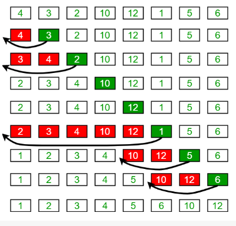
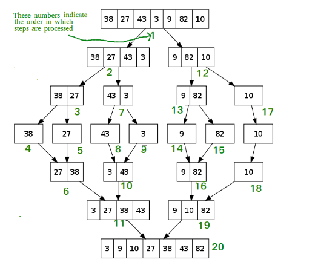
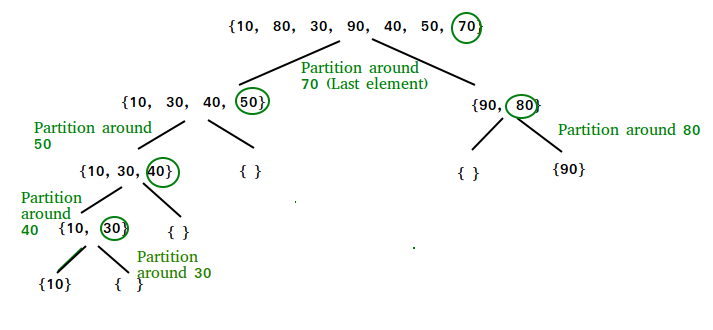
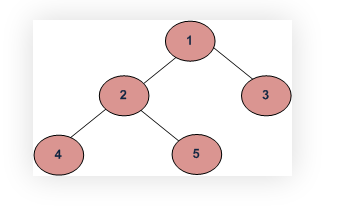

Способы перестановок
Ссылка: Python – Способы найти все перестановки строкиЧасто стоит задача найти все возможные комбинации элементов из подаваемой на вход функции какой-нибудь последовательности. Обычно для этого используют функцию itertools.permutations() . Но для больших данных эта функция работает плохо, например если найти все возможные варианты для числа с 14 знаками, я так и не дождался результата функции. Приходится с помощью традиционных способов искать решение. Далее приведены эти способы для поиска всех перестановок строки 'abc'. Эти способы возвращают варианты: abc acb bac bca cab cba
С помощью рекурсии
def permute(s, path=""):
# Base case: If the string 's' is empty
# print the current permutation stored in 'path'
if not s:
print(path)
return
# Loop through each character in the string 's'
for i in range(len(s)):
permute(s[:i] + s[i+1:], path + s[i])
s = "abc"
permute(s)
|
Этот метод позволяет понять, как шаг за шагом генерируются перестановки, но может оказаться как и функция permutations() не таким эффективным для больших строк.
Использование вложенных циклов и срезов
s = "abc"
# Initialize an empty list to store the permutations
res = []
# Используем три вложенных цикла для генерации всех возможных комбинаций индексов
# Самый первый (внешний) цикл выполняет итерацию по каждому символу в строке
for i in range(len(s)):
# Средний цикл повторяет каждый символ для получения второй позиции
for j in range(len(s)):
# Самый внутренний цикл повторяет каждый символ для получения третьей позиции
for k in range(len(s)):
if i != j and j != k and i != k:
res.append(s[i] + s[j] + s[k])
print(res) # ['abc', 'acb', 'bac', 'bca', 'cab', 'cba']
|
- Используем три вложенных цикла для создания перестановок, выбирая символы один за другим.
- Каждая комбинация проверяется, чтобы убедиться, что ни один символ не повторяется в одной и той же перестановке.
Использование функции генератора
Мы можем использовать пользовательскую функцию-генератор, чтобы получать перестановки одну за другой, а не хранить их в памяти.
def generate_permutations(s, path=""):
# Base case: If the string is empty, yield the current permutation (path)
if not s:
yield path
# Recursive case: Loop through each character in the string
for i in range(len(s)):
yield from generate_permutations(s[:i] + s[i+1:], path + s[i])
s = "abc"
res = list(generate_permutations(s))
print(res) # ['abc', 'acb', 'bac', 'bca', 'cab', 'cba']
print(list(generate_permutations('abcd')))
'''
['abcd', 'abdc', 'acbd', 'acdb', 'adbc', 'adcb', 'bacd', 'badc', 'bcad', 'bcda', 'bdac', 'bdca', 'cabd', 'cadb',
'cbad', 'cbda', 'cdab', 'cdba', 'dabc', 'dacb', 'dbac', 'dbca', 'dcab', 'dcba']
'''
|
- Мы определяем генераторную функцию, которая рекурсивно выдает перестановки.
- Оператор yield позволяет генерировать перестановки по запросу, что экономит память при работе с большими наборами данных.
- Этот метод полезен, когда нам нужно обрабатывать перестановки по одной, а не хранить их все.
Алгоритмы:
Ссылки: Структуры данных и алгоритмы в Python
Алгоритмы — это пошаговые инструкции для выполнения задач. Они могут быть простыми, как сортировка списка чисел, или сложными, как алгоритмы машинного обучения.
Среди самых популярных алгоритмов поиска – поиск в глубину (DFS), поиск в ширину (BFS), жадный алгоритм, поиск по критерию стоимости (UCS), A*-поиск.
Алгоритмы поиска:
Ссылка: книга Cuantum Алгоритмы и структуры данных на Python 2024 год стр. 149
Линейный поиск
Линейный поиск — это самый простой алгоритм поиска. Он последовательно проверяет каждый элемент списка, пока не найдёт искомое значение.
def linear_search(arr, target):
"""
Поиск целевого значения target из arr
Parameters:
arr (list): The list to be searched.
target: The value to be searched for.
Returns:
int: The index of the target value if found, otherwise -1.
"""
for i in range(len(arr)):
if arr[i] == target:
return i
return -1
# Example usage:
arr = [2, 3, 4, 10, 40]
target = 10
result = linear_search(arr, target)
if result != -1:
print(f"Linear Search: Element found at index {result}")
else:
print("Linear Search: Element not found")
Output
Linear Search: Element found at index 3
|
Бинарный поиск
Бинарный поиск — это эффективный алгоритм поиска, который работает только с отсортированными списками. Выполните поиск в отсортированном массиве, многократно деля интервал поиска пополам. Начните с интервала, охватывающего весь массив. Если значение ключа поиска меньше, чем элемент в середине интервала, сузьте интервал до нижней половины. В противном случае сузьте его до верхней половины. Повторяйте проверку до тех пор, пока значение не будет найдено или интервал не окажется пустым.
def binary_search(arr, x):
low = 0
high = len(arr) – 1
mid = 0
while low <= high:
mid = (high + low) // 2
if arr[mid] < x:
low = mid + 1
elif arr[mid] > x:
high = mid – 1
else:
return mid
return -1
# Пример использования
my_list = [1, 2, 3, 4, 5, 6, 7, 8, 9]
result = binary_search(my_list, 4)
print(f'Элемент найден на индексе {result}')
|
Интерполяционный поиск
Интерполяционный поиск — это улучшенная версия двоичного поиска, особенно подходящая для больших и равномерно распределённых массивов. Он вычисляет вероятное положение целевого значения на основе значения ключа и диапазона пространства поиска.- Вычислите вероятное положение целевого значения с помощью формулы интерполяции.
- Сравните целевое значение с элементом в вычисленном положении.
- Если элемент соответствует целевому значению, верните его индекс.
- Если элемент меньше целевого значения, выполните поиск в правой половине списка.
- Если элемент больше целевого значения, выполните поиск в левой половине списка.
- Повторяйте шаги 1–5 до тех пор, пока не будет найдено целевое значение или пока интервал поиска не станет пустым.
import math
def interpolation_search(arr, target):
"""
Perform interpolation search to find the target value in the given sorted list.
Parameters:
arr (list): The sorted list to be searched.
target: The value to be searched for.
Returns:
int: The index of the target value if found, otherwise -1.
"""
low = 0
high = len(arr) - 1
while low <= high and target >= arr[low] and target <= arr[high]:
pos = low + ((high - low) // (arr[high] - arr[low])) * (target - arr[low])
if arr[pos] == target:
return pos
elif arr[pos] < target:
low = pos + 1
else:
high = pos - 1
return -1
# Example usage:
arr = [2, 3, 4, 10, 40]
target = 10
result = interpolation_search(sorted(arr), target)
if result != -1:
print(f"Interpolation Search: Element found at index {result}")
else:
print("Interpolation Search: Element not found")
Output
Interpolation Search: Element found at index 3
|
Jump поиск
Поиск с перескоком — это ещё один алгоритм поиска, подходящий для отсортированных массивов. Он перескакивает на фиксированное количество шагов вперёд, а затем выполняет линейный поиск в меньшем диапазоне.
Алгоритм поиска в ширину (BFS)
Ссылки: Выбор оптимального алгоритма поиска в Python
В этом подходе мы выполняем поиск по всем узлам дерева, создавая широкую сеть. Это означает, что сначала мы обходим один уровень потомков и лишь затем переходим к последующему уровню уже их потомков. Такой поиск сначала изучает ближайшие узлы и затем переходит всё дальше в сторону от исходной точки. Понадобится структура данных - очередь (queue), которая при необходимости даёт самый старший элемент, считая их по порядку добавления.
Преимущества данного вида поиска:
Легко реализовать.
Можно применять в любой задаче поиска.
В отличие от DFS не подвержен проблеме бесконечного цикла, которая может вызвать сбой компьютера при выполнении углублённого DFS-поиска.
Всегда находит кратчайший путь при условии равного веса ссылок, в связи с чем считается полноценным и более оптимальным способом поиска.
Недостатки:
BFS требует больше памяти.
BFS — это так называемый “слепой” поиск, охватывающий огромную область, из-за чего производительность будет уступать другим аналогичным эвристическим методам.
Мы можем найти все узлы дерева, используя рекурсивную функцию bfs, которая:
Сначала проверяет и добавляет стартовый узел в список посещённых, а также в очередь.
Далее, пока в очереди присутствуют элементы, она продолжает исключать узлы, добавлять их непосещённых соседей и затем отмечать их как посещённых. Выполняет эти действия, пока очередь не опустеет.
Для отслеживания посещённых узлов мы устанавливаем visited = [].
Для отслеживания узлов, находящихся в очереди, мы устанавливаем queue = [].
Код BFS в Python:
def bfs(graph, node):
visited.append(node) # добавляем узел, начиная с нулевого
queue.append(node)
while queue:
vertex = queue.pop(0) # удаляем из очереди первый элемент и присваиваем его vertex
for neighbour in graph[vertex]: # теперь смотрим всех соседей этого vertex (текущего узла)
if neighbour not in visited: # если ранее этого соседа не посещали, то
visited.append(neighbour) # переходим к нему, помечая его в список visited
queue.append(neighbour) # и одновременно помечая в список очереди
print("queue=", queue) # пока очередь не станет пустой, queue= []
return visited
visited = []
queue = []
graph = {0: [1, 2], 1: [2], 2: [3], 3: [1,2]}
print(bfs(graph, 0)) # [0, 1, 2, 3]
Как я понял создаем два пустых списка visited и queue. Далее начинаем с посещения корневого узла. Это значит, что помечаем его (root) в visited , а также в queue помещаем соседей узла root. Далее делаем цикл while по queue . В цикле вытаскиваем левый элемент из queue и смотрим его соседей. Если к этим соседям ещё не ходили, то теперь идём (помечая в visited) и одновременно помечая в очередь. Непонятно, зачем для поиска кратчайшего пути переходить на одном уровне от одного соседа к другому. Разве не лучше использовать обход в глубину.
Алгоритм поиска в глубину (DFS)
В этом способе мы всегда посещаем самый углублённый узел, затем идём назад и следуем другим путём, достигая другого конечного узла. Обратите внимание, что в этом алгоритме для запоминания маршрута к конечному узлу и обратно используется механизм стека. При таком подходе нам нужно обойти всю ветку дерева и все прилегающие узлы. Поэтому для отслеживания текущего узла требуется подход “последним вошёл — первым вышел”, который реализуется через стек. После достижения самого глубокого узла все остальные узлы извлекаются из стека. Затем происходит обход прилегающих узлов, которые ещё не посещались. Если бы вместо стека использовалась очередь, представляющая подход “первым вошел — первым вышел”, то мы бы не смогли идти в глубину, не удаляя из очереди текущий узел. Поход DFS подобен прогулке по лабиринту. Вы исследуете путь, пока не достигните его конечной точки, после чего возвращаетесь и идёте другим.Здесь для наглядной демонстрации этого принципа мы используем простое бинарное дерево. Начиная от исходного узла А, мы двигаемся к смежному узлу B, а затем к D, где оказываемся в самом удалённой точке. Затем мы возвращаемся на шаг назад к B и переходим к следующему смежному узлу — E.Давайте разобьём все наши действия на шаги. Сначала мы инициализируем стек и массив “visited” (посещённые узлы).
Добавляем корневой узел А в стек.
Помечаем узел A как посещённый и смотрим, есть ли среди смежных с ним узлов непосещённые. Есть два таких узла, помещаем их в стек и далее выбираем любой из них. Здесь будем следовать алфавитному порядку.
Помечаем B как посещённый и далее смотрим, есть ли у него соседи, которых мы ещё не посетили. Их два — D и E. Добавляем их в стек.
Посещаем D и отмечаем его. У этого узла нет непосещённых соседей, поэтому в стек ничего не добавляем.
Проверяем верхушку стека и через возврат к предыдущему узлу посещаем E. Затем также проверяем наличие непосещённых соседей у него.
Поскольку таких соседей у этого узла нет, мы продолжаем освобождать стек, пока не найдём узел с новыми непосещёнными соседями. В этом случае такового нет, поэтому стек в итоге освобождается полностью.
Преимущества:
- DFS в отношении бинарного дерева обычно требует меньше памяти, чем BFS.
- DFS легко реализовать через рекурсию.
В отличие от поиска в ширину DFS не всегда находит ближайший путь к искомому узлу.
Дерево в коде мы представляем, используя список смежности через словарь Python. Для каждой вершины есть список смежных ей узлов.
graph = {
'A' : ['B','C'],
'B' : ['D', 'E'],
'C' : [],
'D' : [],
'E' : []
}
Далее мы определяем отслеживание посещённых узлов через инструкцию visited = set().
Взяв за основу список смежности и начав с узла A, мы можем найти все узлы дерева, применяя рекурсивную функцию DFS. Алгоритм функции dfs:
- . Проверяем, посещён ли текущий узел. Если да, то он добавляется в соответствующий набор.
- . Функция повторно вызывается для каждого соседа узла.
- . Базовый case вызывается, когда все узлы уже посещены, и после этого функция делает возврат.
def dfs(visited, graph, node):
if node not in visited:
print (node)
visited.add(node)
for neighbor in graph[node]:
dfs(visited, graph, neighbor)
BFS или DFS?
Вот мы и рассмотрели отличия DFS и BFS. Вам наверняка также интересно узнать, когда и какой из них подходит лучше. На ранней стадии изучения алгоритмов я тоже задавался этим вопросом. Надеюсь, мой ответ сможет дать достаточное пояснение:
Если нам известно, что искомая точка находится недалеко от корня, то лучше использовать BFS.
Если дерево имеет очень глубокую структуру, а искомые точки в нём редки, то DFS может потребовать очень много времени. BFS же справится быстрее.
Если дерево очень широкое, то BFS может потребовать так много памяти, что утратит свою практичность.
Если искомые точки встречаются часто, но расположены в глубине дерева, BFS может также оказаться непрактичным.
Обычно стоит использовать:
BFS, когда нужно найти кратчайший путь от конкретного исходного узла к нужной точке. Иначе говоря, когда нас интересует путь с наименьшим числом шагов, ведущих от заданного начального состояния к искомому.
DFS, когда нужно исследовать все возможности и найти наилучшую либо пересчитать количество возможных путей.
BFS или DFS, когда нужно только проверить наличие связи между двумя узлами представленного графа или, иначе говоря, узнать, можем ли мы достичь одного, находясь в другом.
Алгоритм жадного поиска
Ссылки: Жадный алгоритм с примерами на Python
============================================================================================================================
Алгоритмы сортировки
Ссылка: книга Cuantum Алгоритмы и структуры данных на Python 2024 год стр. 128Объяснение алгоритмов сортировки с примерами на Python
Пузырьковая сортировка
Этот простой алгоритм выполняет итерации по списку, сравнивая соседние элементы и меняя их местами, если нужно, пока более крупные элементы не «всплывут» в начало списка, а более мелкие не останутся на «дне». Этот алгоритм не является самым эффективным, но он прост в реализации и понимании.
В качестве общего примера возьмём сортировку чисел в порядке возрастания.
Алгоритм:
Сначала сравниваются первые два элемента списка. Если первый элемент больше, они меняются местами. Если они уже в нужном порядке, оставляем их как есть. Затем переходим к следующей паре элементов, сравниваем их значения и меняем местами при необходимости. Этот процесс продолжается до последней пары элементов в списке. При достижении конца списка процесс повторяется заново для каждого элемента. Это крайне неэффективно, если в массиве нужно сделать, например, только один обмен. Алгоритм повторяется n² раз, даже если список уже отсортирован. Для оптимизации алгоритма нужно знать, когда его остановить, то есть когда список отсортирован. Чтобы остановить алгоритм по окончании сортировки, нужно ввести переменную-флаг. Когда значения меняются местами, устанавливаем флаг в значение True, чтобы повторить процесс сортировки. Если перестановок не произошло, флаг остаётся False и алгоритм останавливается.
def bubble_sort(nums):
# Устанавливаем swapped в True, чтобы цикл запустился хотя бы один раз
swapped = True
while swapped:
swapped = False
for i in range(len(nums) - 1):
if nums[i] > nums[i + 1]:
# Меняем элементы
nums[i], nums[i + 1] = nums[i + 1], nums[i]
# Устанавливаем swapped в True для следующей итерации
swapped = True
return nums
my_list = [64, 34, 25, 12, 22, 11, 90]
print(bubble_sort(my_list)) # [11, 12, 22, 25, 34, 64, 90]
|
Алгоритм работает в цикле while и прерывается, когда элементы ни разу не меняются местами. Вначале присваиваем swapped значение True, чтобы алгоритм запустился хотя бы один раз.
Сортировка по выбору
Этот алгоритм сортирует массив, многократно находя минимальный элемент (в порядке возрастания) из неотсортированной части и помещая его в начало. На каждой итерации выбирается минимальный элемент (в порядке возрастания) из неотсортированного подмассива и перемещается в отсортированный подмассив.
import sys
A = [64, 25, 12, 90, 22, 11]
# перебор всех элементов массива
for i in range(len(A)):
# нахождение минимального элемента
# в несортированном списке
min_idx = i
for j in range(i+1, len(A)):
if A[min_idx] > A[j]:
min_idx = j
# замена элемента с минимальным значением на первый элемент
A[i], A[min_idx] = A[min_idx], A[i]
print("Отсортированный список:")
for i in range(len(A)):
print(f"{A[i]}")
|
Отсортированный список: 11 12 22 25 64 90Временная сложность — O (n**2), так как имеется два вложенных цикла. Алгоритм хорошо сортирует списки малого и среднего размера. Помимо эффективности, сортировка выбором проста и легка в реализации. Он особенно эффективен для небольших списков или ситуаций, когда размер входных данных ограничен. Однако у сортировки выбором есть определенные недостатки. По сравнению с более сложными методами сортировки, такими как быстрая сортировка или сортировка слиянием, она медленнее, поэтому не очень хорошо подходит для сортировки больших объемов данных или сценариев, в которых скорость имеет решающее значение.
Пузырьковая сортировка
Это простейший алгоритм сортировки, который работает путем многократной перемены мест соседних элементов, если они расположены в неправильном порядке.
def bubble_sort(arr):
n = len(arr)
# перебор всех элементов списка
for i in range(n):
# последние i элементов на месте
for j in range(0, n-i-1):
# обход элементов от 0 до n-i-1
# поменять местами, если найденный элемент
# больше следующего
if arr[j] > arr[j+1]:
arr[j], arr[j+1] = arr[j+1], arr[j]
arr = [64, 34, 25, 12, 22, 11, 90]
bubble_sort(arr)
print("Отсортированный список:")
#for i in range(len(arr)):
for i in arr:
#print(f"{arr[i]}")
print(i)
|
# Отсортированный список: # 11 # 12 # 22 # 25 # 34 # 64 # 90
Сортировка вставкой
Чтобы отсортировать массив размера n по возрастанию, используйте сортировку вставкой:- Переберите список от arr[1] до arr[n].
- Сравните текущий элемент с его предыдущим.
- Если ключевой элемент меньше своего предшественника, сравните его с предыдущими элементами. Переместите больший элемент на одну позицию вверх, чтобы освободить место для поменявшегося элемента.

def insertion_sort(arr):
# перебор от 1 до len(arr)
for i in range(1, len(arr)):
key = arr[i]
# Переместить элементы arr[0..i-1], которые больше ключа,
# на одну позицию вперед от их текущей позиции
j = i-1
while j >= 0 and key < arr[j] :
arr[j + 1] = arr[j]
arr[j] = key
j -= 1
arr = [12, 11, 60, 13, 20, 5, 6]
insertion_sort(arr)
for i in range(len(arr)):
print(f"{arr[i]}")
|
5 6 11 12 13 20 60Данный алгоритм способен эффективно сортировать списки небольшого и среднего размера. Его средняя и наихудшая временная сложность со ставляет О(п**2). Сортировка вставками может показаться неэффективной, однако в сценариях, когда список частично отсортирован, она превосходит все остальные алгоритмы. В лучшем случае, когда список уже отсортирован, временная сложность данного алгоритма достигает О(n). Это связано с тем, что сортировка вставками обрабатывает каждый элемент списка только раз, не требуя никаких перестановок. Таким образом, производительность данного алгоритма зависит от начального состояния списка и в определенных ситуациях может быть весьма высокой.
Сортировка слиянием
Этот алгоритм делит входной массив на две половины, вызывает себя для двух половин, а затем объединяет две отсортированные половины. Для слияния двух половин используется функция merge(). Merge(arr, l, m, r) — это ключевой процесс, который предполагает, что arr[l..m] и arr[m+1..r] отсортированы, и объединяет два отсортированных подмассива в один.
MergeSort(arr[], l, r)
Если r > l
1. Найдите среднюю точку, чтобы разделить массив на две половины:
середина m = l+ (r-l)/2
2. Вызовите mergeSort для первой половины:
вызов mergeSort(arr, l, m)
3. Вызовите mergeSort для второй половины:
вызов mergeSort(arr, m+1, r).
4. Объедините две половины, отсортированные на шаге 2 и 3:
вызов merge(arr, l, m, r)

def merge_sort(arr):
if len(arr) > 1:
# находим середину списка
mid = len(arr)//2
# делим список
L = arr[:mid]
# на две половины
R = arr[mid:]
# сортируем первую
merge_sort(L)
# сортируем вторую
merge_sort(R)
i = j = k = 0
# копируем данные во временные списки L[] и R[]
while i < len(L) and j < len(R):
if L[i] < R[j]:
arr[k] = L[i]
i += 1
else:
arr[k] = R[j]
j += 1
k += 1
# проверяем, что ничего не потеряли
while i < len(L):
arr[k] = L[i]
i += 1
k += 1
while j < len(R):
arr[k] = R[j]
j += 1
k += 1
def print_list(arr):
for i in range(len(arr)):
print(arr[i], end=" ")
print()
if __name__ == '__main__':
arr = [12, 11, 40, 20, 13, 5, 6, 7]
print("Изначальный список:", end="\n")
print_list(arr)
merge_sort(arr)
|
Изначальный список: 12 11 40 20 13 5 6 7 Отсортированный список: 5 6 7 11 12 13 20 40
Алгоритм быстрой сортировки или "разделяй и властвуй"
Он выбирает элемент за основу и разбивает заданный массив вокруг него. Существует много различных версий этого алгоритма, которые выбирают основу разными способами:- Всегда выбирать последний элемент в качестве основы (реализовано ниже).
- Выбирать случайный элемент в качестве основы.
- Выбрать медиану в качестве основы.

ShellSort
Является разновидностью сортировки вставкой.Концепция временной сложности
Временная сложность — это показатель, который позволяет получить общее представление о взаимосвязи между количеством входных данных (обычно обозначаемых как п) и количеством шагов, выполняемых алгоритмом. Почему важно разбираться во временной сложности? Представьте, что при сутствуете на магическом шоу, где два фокусника утверждают, что умеют сортировать колоду карт. Один говорит, что использует линейный алгоритм сортировки, а это значит, что время, необходимое для сортировки карт, увеличивается пропорционально их количеству. Время работы алгоритма сортировки, который использует второй фокусник, судя по всему, при увеличении количества карт растет экспоненциально. Если бы вам предложили доверить одному из этих фокусников сортировку колоды из миллиона карт, то кого бы вы выбрали? Временная сложность может помочь вам принять обоснованное решение в подобных ситуациях, позволяя понимать, как эффективность алгоритма зависит от размера входных данных.Нотация «О большое»
Нотация «О большое» — математическое представление временной сложности. Это ценный инструмент для анализа эффективности алгоритмов, дающий представление о скорости их выполнения. Используя эту нотацию, вы можете принимать обоснованные решения о том, какие алгоритмы использовать для различных сценариев. Выбор правильного алгоритма для конкретной задачи может оказать значительное влияние на эффективность и производительность ваших решений. Ниже представлены некоторые распространенные обозначения нотации «О большое» и соответствующие им описания.- 0(1) — постоянное время. Время работы алгоритма остается неизменным независимо от размера входных данных. Это очень эффективно и желательно во многих случаях.
- О(1о§ п) — логарифмическое время. Алгоритмы с такой временной сложностью уменьшают размер входных данных с каждой итерацией. Классический пример такого алгоритма — двоичный поиск.
- О(п) — линейное время. В алгоритмах с линейной временной сложностью время выполнения линейно увеличивается по мере увеличения размера входных данных. Это общий сценарий для многих алгоритмов.
- О(п log и) — линейно-арифметическое время. Эта временная сложность часто встречается в алгоритмах сортировки, таких как сортировка слиянием и быстрая сортировка. В этих алгоритмах соблюдается баланс между временной и пространственной сложностью, позволяющий достичь оптимальной производительности.
- О(и2), О^пР) и т. д. — полиномиальное время. Алгоритмы с полиномиальной временной сложностью имеют вложенные циклы, что приводит к значительному увеличению времени выполнения при увеличении раз мера входных данных.
Простые алгоритмы — пузырьковая сортировка, сортировка выбором и сортировка вставками — имеют временную сложность О(и2), вследствие этого не очень эффективны при работе с большими наборами данных. Однако они могут хорошо работать с маленькими наборами.
Расширенные алгоритмы — быстрая сортировка, сортировка слиянием и пирамидальная сортировка — имеют временную сложность O(n log п), поэтому часто используются при работе с большими наборами данных.
ДЕРЕВЬЯ И ГРАФЫ: ИЕРАРХИЧЕСКИЕ СТРУКТУРЫ ДАННЫХ
Ссылка: книга Cuantum Алгоритмы и структуры данных на Python 2024 год стр. 185 Глава 6Деревья и графы являются одними из самых фундаментальных структур данных в компьютерных науках и программировании. Они играют ключевую роль в моделировании различных систем и процессов, таких как иерархические структуры, сети и маршруты.
Методы обхода:

Если взять в качестве примера двоичное дерево на этом рисунке, при BFS-подходе порядок обхода узлов будет следующим: 1, 2, 3, 4, 5.
Виды деревьев
Двоичные деревья поиска
Сбалансированные деревья
N-арные деревья
В-деревья
Граф — это структура данных, состоящая из узлов (вершин) и ребер (связей между узлами). Графы могут быть ориентированными (направленные ребра) и неориентированными (ненаправленные ребра). Графы широко используются для моделирования сетей, таких как социальные сети, транспортные сети и компьютерные сети.
Хэш-таблицы — это одна из самых эффективных и широко используемых структур данных в программировании. Они позволяют быстро находить, добавлять и удалять элементы, что делает их идеальными для множества задач. В Python хэш-таблицы реализованы через встроенный тип данных dict
Динамическое программирование - это подход к решению задачи, в котором эту задачу разбиваем на более простые подзадачи.
Алгоритмы поиска пути в робототехнике
Сравнение динамического программирования и стратегии «разделяй и властвуй»Деревья: типы и методы обхода
Дерево — это иерархическая структура данных, состоящая из узлов, где каждый узел имеет один родительский узел и может иметь несколько дочерних узлов. Корневой узел — это узел без родителя, а листья — узлы без дочерних узлов. Деревья часто используются для представления иерархий, таких как файловые системы, организационные структуры и родословные деревья.
Пример дерева:
A
/ \
B C
/ \ \
D E F
В этом примере узел "A" является корневым узлом, узлы "B" и "C" — его дочерними узлами, а узлы "D", "E" и "F" — листьями.
Когда говорят о поиске в ширину (Breadth First Search, BFS) и глубину (Depth First Search, DFS), имеется в виду порядок обхода узлов двоичного дерева. При обходе в глубину вы сначала опускаетесь к низу дерева, а потом идете в сторону, а при обходе в ширину — наоборот, начинаете с корня и спускаетесь сначала к его узлам-потомкам, обходите их, потом спускаетесь к потомкам потомков, обходите их, и так далее.
В случае с DFS возможны разные варианты последовательности посещения узлов. Все зависит от того, будет это прямой, обратный или центрированный обход. Например, прямой обход выдаст 1, 2, 4, 5, 3.
Двоичные деревья
Каждый узел в этой структуре может иметь до двух дочерних элементов, обычно называемых левым и правым. Двоичные деревья являются одной из основных структур данных в информатике и находят широкое применение в различных приложениях. Они позволяют эффективно взаимодействовать с данными, поэтому активно используются в таких операциях, как поиск, сортировка и организация
информации. Кроме того, двоичные деревья лежат в основе более сложных типов деревьев, таких как двоичные деревья поиска и AVL-деревья, что повышает их полезность и производительность.
Двоичные деревья поиска (Binary Search Tree, BST) — структура данных, используемая для представления данных с иерархической организацией, в которой все узлы соответствуют следующему свойству: левый дочерний узел меньше родительского, а правый дочерний — больше. Это свойство по зволяет выполнять поиск, вставку и удаление за время O(log п), что делает двоичные деревья весьма эффективными. BST высоко ценятся в области информатики и структур данных. Они предлагают метод иерархического хранения и организации данных, позволяя быстро получать доступ к ним и взаимодействовать с ними. Соблюдение принципов BST помогает поддерживать баланс и оптимизацию, делая работу по созданию и анализу алгоритмов эффективной.
Деревья AVL и красно-черные деревья — два популярных примера самобалансирующихся деревьев двоичного поиска. Они специально разработаны для поддержания баланса путем автоматической корректировки своей структуры. Благодаря этой регулировке высота дерева всегда находится под контролем, позволяя предотвращать снижение производительности и обеспечивать эффективность поисковых операций. Способность к самобалансировке делает деревья АѴЬ и красно-черные деревья надежным и эффективным решением
для хранения и поиска данных.
Это тип дерева, в котором каждый узел может иметь несколько дочерних. Эта характеристика делает такое дерево менее строгим, чем двоичное, и позволяет более гибко представлять иерархические структуры данных. Такие деревья универсальны и особенно полезны в сценариях, где данные естественным образом образуют сложную иерархию с множеством ветвей, позволяя эффективно организовывать и извлекать данные и управлять ими, а также анализировать данные в различных областях, таких как информатика, биология и сетевые системы.
В-деревья — структура данных, используемая в базах данных и файловых системах. Они дают возможность хранить огромные объемы данных и управлять ими. Благодаря своим уникальным свойствам В-деревья позволяют эффективно выполнять операции вставки, удаления и поиска, что делает их очень ценным компонентом различных приложений. В базах данных В-деревья отвечают за быстрый доступ и поиск данных, повышая общую производительность. В файловых системах они способствуют беспрепятственной организации файлов и управлению ими, повышая эффективность операций.
Графы
Ссылка: книга Cuantum Алгоритмы и структуры данных на Python 2024 год стр. 193
Пример неориентированного графа:
A – B
| |
C – D
Пример ориентированного графа:
A → B
↑ ↓
C ← D
В неориентированном графе ребра не имеют направления, тогда как в ориентированном графе ребра имеют направление, указывающее путь от одного узла к другому.
Хеширование
Ссылка: книга Cuantum Алгоритмы и структуры данных на Python 2024 год стр. 156
Хэш-таблицы в Python: Как они работают и зачем нужны
Динамическое программирование
Ссылки: книга Грокаем алгоритмы стр. 253
Динамическое программирование — ключевой подход в робототехнике, особенно в алгоритмах поиска пути. Оно позволяет роботам ориентироваться в сложных условиях, разбивая задачу перемещения на более мелкие и управляемые подзадачи. При поиске пути алгоритмы динамического программирования используют ранее определенные оптимальные решения, чтобы проложить лучший
маршрут для робота, учитывая препятствия, изменчивость рельефа и другие важные факторы. Эта методология позволяет роботам двигаться эффективно и безопасно, оптимизируя маршруты и сокращая ненужные затраты энергии. Такой подход не только повышает общие показатели эффективности роботов, но и улучшает их способность адаптироваться к различным ситуациям и препятствиям, с которыми они могут столкнуться.
К этому моменту вы могли заметить, что стратегия «разделяй и властвуй» и динамическое программирование чем-то похожи. В этом подразделе мы обсудим, чем они отличаются друг от друга. В обоих подходах задачи разбиваются на более мелкие, однако в динами
ческом программировании результаты этих подзадач сохраняются, чтобы не пришлось проводить повторные вычисления. Это различие важно при решении задач, в которых подзадачи перекрываются, как это часто бывает в задачах оптимизации. В методе «разделяй и властвуй» подзадачи решаются независимо друг от друга, а их решения объединяются, чтобы можно было получить окончательное решение. В динамическом программировании используется подход «снизу вверх», при котором подзадачи решаются систематическим образом и сохраненные результаты используются для эффективного решения более крупных задач. Таким образом, несмотря на то что оба метода направлены на решение сложных задач, динамическое программирование — более эффективный и оптимизированный подход, поскольку позволяет использовать данные, полученные при решении небольших подзадач.